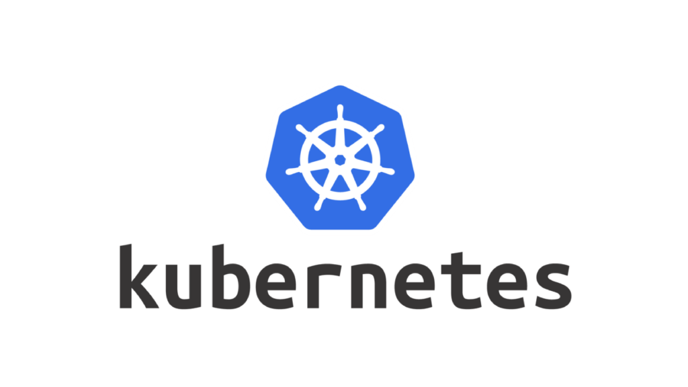

Kubernetes Cheatsheat
Posted on June 22, 2025 in Kubernetes
Kubernetes Command Cheat Sheet

Containers, which are little app boxes, coexist and function together in Kubernetes, which is like to a magical toy box for apps. We utilize kubectl, a command-line utility that communicates with Kubernetes like a kind wizard, to control this box. Kubectl is your magic tool for managing pods, deploying apps, and assessing cluster health. Motivated by your passion for simple, useful tools, this primer enumerates key kubectl commands for Linux, Docker, and app developers (think Python, Java, and PostgreSQL). Let's explore the Kubernetes ecosystem!
What’s Kubectl?
Kubectl is your go-to tool for Kubernetes, ideal for Docker enthusiasts and Linux geeks. With only a few instructions, you can automate operations, debug apps, and manage your cluster. You have a neat and effective solution for your Notes site projects when you combine it with your craigderington Docker images for Python, Node.js, or Nginx.
Pro Tip: Set up autocomplete for faster typing:
source <(kubectl completion bash) # Add to ~/.bashrc
Essential Kubectl Commands
- Cluster Management
Check your cluster’s pulse or switch contexts for multi-cluster setups.
Version info:
kubectl version --short
Shows client and server Kubernetes versions.
Cluster info:
kubectl cluster-info
Displays control plane and service endpoints (e.g., KubeDNS).
List contexts:
kubectl config get-contexts
See available clusters and their namespaces.
Switch context:
kubectl config use-context <context-name>
Jump between clusters.
Set namespace:
kubectl config set-context --current --namespace=<namespace>
Focus on a specific namespace.
- Namespace Management Namespaces keep your apps organized
Create namespace:
kubectl create namespace my-app-namepace
List namespaces:
kubectl get namespaces.
Describe namespace:
kubectl describe namespace my-app
Delete namespace:
kubectl delete namespace my-app
- Pod Management Pods are the smallest units, like containers running your Python or Java apps.
List pods:
kubectl get pods -n my-app
Detailed pod info:
kubectl describe pod my-pod -n my-app
Pod logs:
kubectl logs my-pod -n my-app
Run command in pod:
kubectl exec -it my-pod -n my-app -- bash
Create pod:
kubectl run my-pod --image=craigderington/docker-python --restart=never
- Deployment Management
Deployments manage pods, ensuring your app (e.g., a Java Spring Boot app) stays running.
Create deployment:
kubectl create deployment my-app --image=craigderington/docker-node
List deployments:
kubectl get deployments -n my-app
Scale deployment:
kubectl scale deployment my-app --replicas=3 -n my-app
Update deployment:
kubectl set image deployment/my-app my-app=craigderington/docker-python:latest
Rollback deployment:
kubectl rollout undo deployment/my-app -n my-app
Check rollout status:
kubectl rollout status deployment/my-app -n my-app
- Service Management
Services let pods talk to each other or the outside world, like a network bridge.
Expose deployment:
kubectl expose deployment my-app --port=80 --type=LoadBalancer -n my-app
List services:
kubectl get services -n my-app
Describe service:
kubectl describe service my-app -n my-app
- Node Operations
Nodes are the machines running your pods, like your Linux servers.
List nodes:
kubectl get nodes
Describe node:
kubectl describe node my-node
Cordon node:
kubectl cordon my-node
Un-cordon node:
kubectl uncordon my-node
Drain node:
kubectl drain my-node --ignore-daemonsets
- ConfigMaps and Secrets
Store configs or sensitive data (e.g., PostgreSQL credentials) for your apps.
Create ConfigMap:
kubectl create configmap app-config --from-literal=key=value -n my-app
Create Secret:
kubectl create secret generic db-secret --from-literal=password=secret -n my-app
List ConfigMaps:
kubectl get configmaps -n my-app
Describe Secret:
kubectl describe secret db-secret -n my-app
- Resource Monitoring
Keep an eye on resource usage for your Python or Java apps.
Node resources:
kubectl top node
Pod resources:
kubectl top pod -n my-app
Events:
kubectl get events -n my-app
- Declarative Management
Use YAML files for reproducible setups, like your Docker Compose setups.
Apply file:
kubectl apply -f my-app.yaml
Delete from file:
kubectl delete -f my-app.yaml
Example YAML for your Python
app:apiVersion:
apps/v1
kind: Deployment
metadata:
name: my-python-app
namespace: my-app
spec:
replicas: 2
selector:
matchLabels:
app: python
template:
metadata:
labels:
app: python
spec:
containers:
- name: python
image: craigderington/docker-python
ports:
- containerPort: 5000
Pro Tips
Alias it: Add
alias kc=kubectl
To your ~/.bashrc for shorter commands.
Debug trick: Use
kubectl debug pod/my-pod -n my-app
To troubleshoot issues (e.g., network problems with your PostgreSQL container).
Save output: Use -o yaml > output.yaml to save resource configs for later.
Resources: